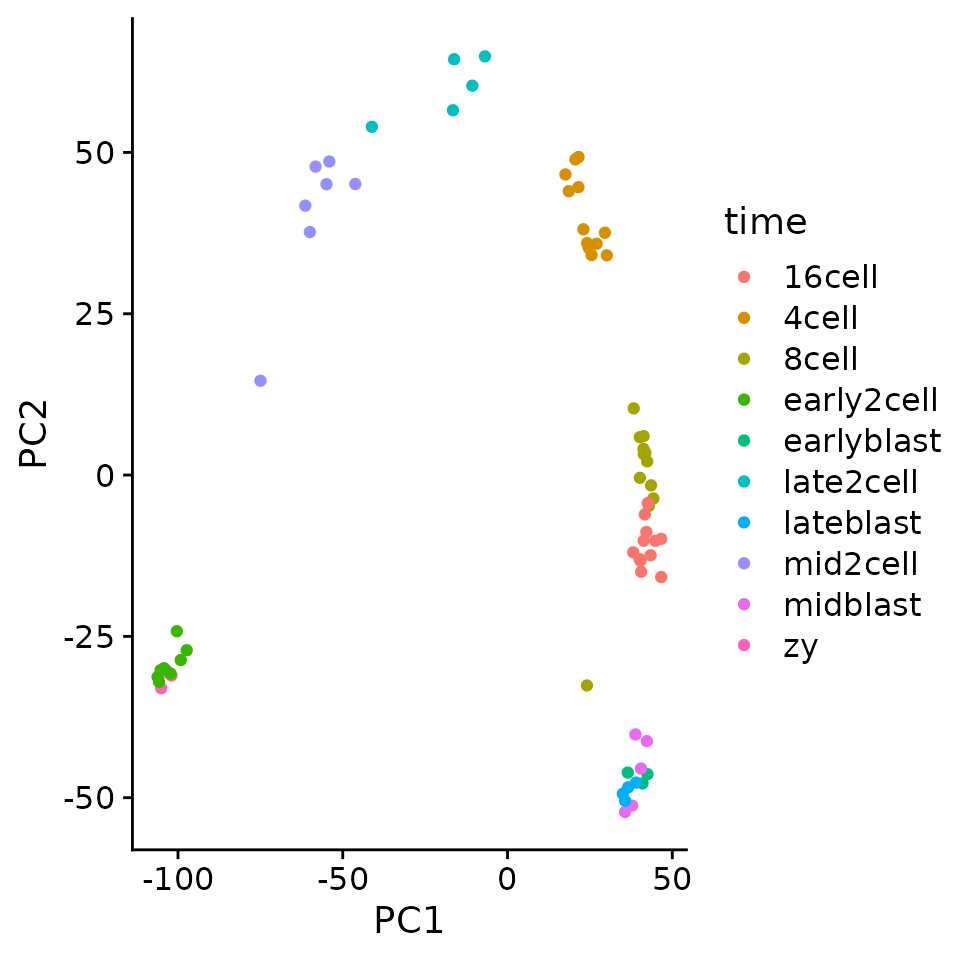

library(tidyverse)
library(ComplexHeatmap)
library(ggrepel)
library(pbda)
library(cowplot)
theme_set(theme_cowplot())Goals: Use PCA to identify sources of variation and summarize relationship between variables/samples in a large dataset.
PCA
As we’ve learned throughout the class, you need to visualize your data to identify key patterns. However, high dimensional datasets are difficult to visualize in a meaningful way. For example how do you find a pattern in a large sequencing dataset with 100 samples, and 20,000 genes?
Heatmaps provide one way to visualize selectively gene sets for a relatively small number of samples, but discerning overall patterns between samples can still be difficult, even with clustering.
Principle Component Analysis is a commonly used technique to examine the structure of large datasets.
Resources:
Background on PCA
PCA takes a set of variables and generates a new set of variables. The new variables are selected to capture the maximal variance in the data.
Each new variable is known as a principal component. The first principal component represents a linear combination of the original variables that captures the maximum variance in the dataset. Basically find a vector through the dataset that captures the maximum variance.
The second component is also a linear combination of the original variables but is uncorrelated to the first component.
In this manner PCA generates a new set of variables that are ordered based on the variance captured in the data. It’s for this reason that is so useful for exploratory analysis and dimensionality reduction.
Consider the following experiment where we measure gene expression for 2 genes in 100 samples. Because there are only 2 genes, we can visualize all of the data in a 2D scatterplot.
First, let’s generate some example data.
# generate some correlated variables, scale, and make tidy
set.seed(42)
sim <- MASS::mvrnorm(100,
c(0, 0),
matrix(c(1, 0.95, 0.95, 1),
2,
2)) %>%
scale() %>%
as.data.frame() %>%
rownames_to_column("id") %>%
arrange(V1, V2) %>%
rename(gene_1 = V1, gene_2 = V2) %>%
as_tibble() %>%
mutate(id = row_number())
sim
#> # A tibble: 100 x 3
#> id gene_1 gene_2
#> <int> <dbl> <dbl>
#> 1 1 -3.00 -2.12
#> 2 2 -2.82 -2.93
#> 3 3 -2.28 -2.38
#> 4 4 -2.17 -2.54
#> 5 5 -1.53 -1.31
#> 6 6 -1.52 -1.93
#> 7 7 -1.52 -1.81
#> 8 8 -1.42 -1.99
#> 9 9 -1.30 -1.41
#> 10 10 -1.29 -1.38
#> # … with 90 more rows# select points to label for visualization
max_min_points <- slice(sim, c(1:5, 95:100))
# make a plot
og_plt <- ggplot(sim, aes(gene_1, gene_2)) +
geom_point() +
geom_text_repel(data = max_min_points,
aes(label = id)) +
# scale y axis to same as x
ylim(min(sim$gene_1),
max(sim$gene_2))
og_pltNext we’ll run PCA on this simulated data using the prcomp function.
prcomp returns an object of class prcomp with a few slots. The x slot contains the principal components in a matrix.
For ease of plotting I will define a function to make a plot.
# function to make a pretty labeled plot
plot_labeled_pca <- function(input_data,
pca_obj){
#tidy the pc matrix
pc_x <- pca_obj$x %>%
as.data.frame() %>%
mutate(id = input_data$id)
# select points to label
max_min_points <- slice(pc_x, c(1:5, 95:100))
# compute variance explained
percent_var <- (100 * pca_obj$sdev^2 /
sum(pca_obj$sdev^2)) %>%
signif(3)
#plot the data
pca_plt <- ggplot(pc_x, aes(PC1, PC2)) +
geom_point() +
geom_text_repel(data = max_min_points,
aes(label = id)) +
labs(x = str_c("PC1 ", percent_var[1], "%"),
y = str_c("PC2 ", percent_var[2], "%")) +
# make axes symmetric
ylim(c(min(pc_x$PC1),
max(pc_x$PC1)))
pca_plt
}If we plot out the new variables PC1 and PC2 you can see that now the data has been flattened and spread out along the PC1 axis.
As we can see, PCA has refactored the data such that PC1 now represents a vector through the data that captures the most variance. The second PC, now represents a distinct type of variance represented as variance perpendicular to the y = x line.

Another way to demonstrate what PCA is doing is to show the information captured by each PC. (see post here)

Example with more dimensions
What if we had more dimensions that are just noise? How does this impact PCA?
# generate a matrix of random numbers
# drawn from a normal dist. to simulate noise
set.seed(20181214)
more_genes <- matrix(rnorm(1000,
mean = 0,
sd = 0.25),
nrow = 100,
ncol = 10)
# add column names
colnames(more_genes) <- str_c("gene_noise_",
1:ncol(more_genes))
# add the matrix to the simulation data_frame by column
sim_2 <- cbind(sim, more_genes)
sim_2[1:5, 1:6]
#> id gene_1 gene_2 gene_noise_1 gene_noise_2 gene_noise_3
#> 1 1 -2.995217 -2.123704 0.089215287 -0.40819808 -0.48037882
#> 2 2 -2.821900 -2.933205 -0.339377410 -0.03582506 0.41886793
#> 3 3 -2.278693 -2.375272 0.131539067 -0.42624492 0.28643147
#> 4 4 -2.167279 -2.535480 0.098178061 -0.20509451 -0.06692551
#> 5 5 -1.528019 -1.310610 0.007170167 0.04159706 0.03533156The plot() function can be used to quickly generate many exploratory plots. If you pass two vectors of the same length, you will get a scatterplot.
However, if you supply plot with a data.frame with only numeric values, it will plot all of the cross comparisons of the columns, which is useful in this example to quickly highlight that gene_1 and gene_2 are the only correlated or interesting variables.
Now if we had 2000 dimensions (i.e. genes) we couldn’t resonably investigate all of the scatterplots for each gene compared to each other gene. Even with a small real dataset with 10 genes, it’s hard to identify important relationships.
Next we’ll run PCA on this new data
How much variation is captured by each PC?
The sdev slot contains the standard deviation of the principal components. The square of this value is the variance explained by the PC.
sds <- pc2$sdev
# get variance per pc
var_per_pc <- sds^2
#calculate percent variance per pc
percent_var_per_pc <- 100 * (var_per_pc / sum(var_per_pc))
#plot a vector
plot(percent_var_per_pc)
As we can see most of the variation in the data is captured in the first PC. This means that if we dropped the remaining PCs from the data we would lose very little information. It is for this reason that PCA is so useful for dimensionality reduction for big datasets like single cell RNA-seq.
How to find features (genes) associated with each PC
As we have learned each PC is linear combination of the features (i.e genes) in the data. How do we determine which features are most important for each PC?
The rotation slot of the prcomp object contains the rotations (also known as loadings) for each PC. These loadings can be interpreted as the amount each feature contributes to a principle component. Strongly positive loadings mean that the feature is strongly positivlye correlated with the PC. Strongly negative loadings indicate that it is strongly negatively correlated. Loadings at zero indicate no contribution.
By ranking the loadings we can identify which genes impact each PC.
pc2$rotation[, 1:3]
#> PC1 PC2 PC3
#> gene_1 0.7053063021 -0.04871949 0.01920815
#> gene_2 0.7053462316 0.03364238 -0.02973091
#> gene_noise_1 0.0230621826 0.02051417 -0.08251792
#> gene_noise_2 0.0319279005 0.21472325 0.07504765
#> gene_noise_3 -0.0143038106 -0.11483800 -0.03152142
#> gene_noise_4 -0.0236241033 0.22100695 0.02117113
#> gene_noise_5 -0.0246378278 -0.18849671 0.63608275
#> gene_noise_6 -0.0037009439 -0.05526442 0.16294670
#> gene_noise_7 -0.0268014930 0.05081115 -0.69522057
#> gene_noise_8 0.0368993691 0.05205190 0.13542228
#> gene_noise_9 0.0002263975 -0.81355912 -0.21193486
#> gene_noise_10 -0.0038867809 -0.42682676 0.08440284# for PC1
pc2$rotation[, 1] %>%
sort(decreasing = TRUE) %>%
head(3)
#> gene_2 gene_1 gene_noise_8
#> 0.70534623 0.70530630 0.03689937Sidebar: sorting vectors using order()
order return the sort order of a vector.
sort(c(2, 5, 1, 3))
#> [1] 1 2 3 5
order(c(2, 5, 1, 3))
#> [1] 3 1 4 2
order(c(2, 5, 1, 3), decreasing = TRUE)
#> [1] 2 4 1 3Useful shortcut to get vector sorted on the absolute values:
vec <- c(-10, 5, 10, -9, 0, 2, -3, 5)
vec[order(abs(vec),
decreasing = TRUE)]
#> [1] -10 10 -9 5 5 -3 2 0pc1 <- pc2$rotation[, 1]
pc1[order(abs(pc1), decreasing = TRUE)] %>%
head()
#> gene_2 gene_1 gene_noise_8 gene_noise_2 gene_noise_7 gene_noise_5
#> 0.70534623 0.70530630 0.03689937 0.03192790 -0.02680149 -0.02463783Using this approach we can quickly identify that gene_1 and gene_2 are driving the variance in the data.
Run PCA on a single cell dataset
Step 2: Scale the data.
This makes every variable equal in weight. For example if one variable ranges from -100 to 100, this variable will have more weight than one that ranges from -1 to 1. Often in most datasets scaling the variables is necessary to avoid projecting the PCA solely based on the abundance of a variable.
Step 4: Examine variance explained by each PC
Exercise: make a ggplot plot that plots PC versus percent variance explained
Step 5: Plot PCs
Exercise: Generate a ggplot plot that plots PC1 versus PC2 and color by developmental stage. (i.e. zy, 4cell, 8cell, etc.)
pc_mat <- pc$x
library(ggrepel)
pc_mat %>%
as.data.frame() %>%
as_tibble(rownames = "sample") %>%
ggplot(aes(PC1, PC2)) +
geom_point() +
geom_text_repel(aes(label = sample))
pc_mat %>%
as.data.frame() %>%
as_tibble(rownames = "sample") %>%
separate(sample,
into = c("time", "rep"),
sep = "_") %>%
ggplot(aes(PC1, PC2)) +
geom_point(aes(color = time)) 
kmeans cluster the data
set.seed(42)
km <- kmeans(pc_mat, centers = 7)
km_clusters <- km$cluster
tidy_clusters <- tibble(
sample = names(km_clusters),
cluster = km_clusters
)
tidy_clusters
#> # A tibble: 72 x 2
#> sample cluster
#> <chr> <int>
#> 1 zy_1 4
#> 2 zy_2 4
#> 3 zy_3 4
#> 4 zy_4 4
#> 5 early2cell_1 4
#> 6 early2cell_2 4
#> 7 early2cell_3 4
#> 8 early2cell_4 4
#> 9 early2cell_5 4
#> 10 early2cell_6 4
#> # … with 62 more rows
plt_dat <- pc_mat %>%
as_tibble(rownames = "sample") %>%
left_join(tidy_clusters, by = "sample") %>%
mutate(cluster = as.character(cluster))
ggplot(plt_dat, aes(PC1, PC2)) +
geom_point(aes(color = cluster))
Step 6: Find genes that are associated with each PC
For example we can see that PC1 separates that data along the developmental time. If we find genes with strongly positive loadings these should be genes that increase over time.
# find the top 25 genes that have the most positive and the most negative loadings for PC1
pc1 <- pc$rotation[, 1]
top25 <- sort(pc1,
decreasing = TRUE) %>% head(25)
bottom25 <- sort(pc1) %>% head(25)
top_genes <- c(top25, bottom25)Exercise: Make a heatmap that plots the pc1_genes
Additional exercise
There is another dataset called tx_rates in the pbda package. This dataset contains transcription rates of mouse dendritic cells after exposure to LPS. Run PCA on this dataset to investigate the relationships between the different sampled time points. First remove genes (rows) with all zero values and remove rows that have zero variance (matrixStats::rowVars) then log transform the data prior to scaling.